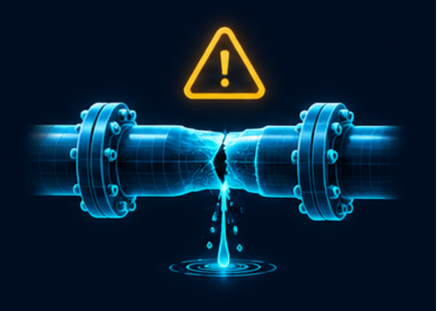
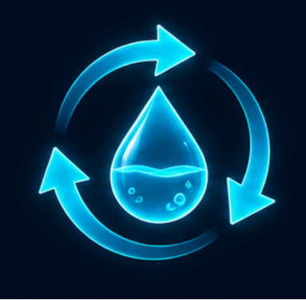

בנק האתגרים
שמונה סיפורי מקרה שיעזרו לנו להבין את הבעיה, את האדם ואת מה שהוא צריך.
סיפורי המקרה דמיוניים ונועדו לחקר בכיתה.
 אתגר 1
אתגר 1שומרים על הקור
הדרך ארוכה, והתרופה צריכה להישאר קרה
משלוח תרופות צריך להגיע למרפאה רחוקה ולהישאר קר לאורך הדרך. כשהארגז מגיע, המדחום מראה שהכול תקין — אבל מה קרה בזמן הנסיעה?
לקריאת הכתבה ←
אתגר 2מוצאים נזילה
לאן נעלמים המים בגינת בית הספר?
אבי, שאחראי לתחזוקה בבית הספר, גילה שבחודש האחרון השתמשו בהרבה יותר מים מהרגיל. הברזים סגורים, אבל ליד גינת בית הספר האדמה נשארת רטובה. הוא חושד שיש נזילה בצינור שעובר מתחת לאדמה.
לקריאת הכתבה ← אתגר 3
אתגר 3שומרים על הצמחים
אותה חממה, אבל תנאים שונים
מיכל מטפלת בחממה של בית הספר. לאחרונה היא שמה לב שחלק מצמחי החסה נראים רעננים, ואחרים נובלים בשעות הצהריים. כל הצמחים מקבלים מים, ולכן היא רוצה להבין מה עוד משפיע עליהם.
לקריאת הכתבה ←רואים מרחוק
מה השתנה בשמורה אחרי הסערה?
אחרי לילה של גשם ורוחות, נועה, פקחית בשמורת טבע, צריכה לבדוק אילו שבילים בטוחים למטיילים. הגיעו דיווחים על עצים שנפלו ועל מים שחסמו מעברים. השמורה גדולה, וחלק מהמקומות רחוקים מתחנת הפקחים.
לקריאת הכתבה ← אתגר 5
אתגר 5מוצאים את הדרך
באיזה שביל נמצאת הקבוצה?
דנה מדריכה קבוצת מטיילים בדרך לנקודת מפגש. בצומת שבילים היא מגלה שהשלט נפל. שני השבילים נראים דומים, והיא אינה בטוחה היכן בדיוק הקבוצה נמצאת. דנה עוצרת במקום בטוח כדי לבדוק את המצב.
לקריאת הכתבה ← אתגר 6
אתגר 6שולחים הודעה
יש מידע חשוב, אבל אין קליטה
רוני מוביל קבוצת מטיילים בעמק מרוחק. הקבוצה הגיעה למקום המנוחה בשלום, אבל היא מתעכבת ותגיע מאוחר לנקודת האיסוף. רוני רוצה לעדכן את הנהג שממתין להם. הוא שולף את הטלפון ומגלה שאין קליטה סלולרית.
לקריאת הכתבה ←
אתגר 7משתמשים שוב במים
האם לכל המים חייבים להיות אותו סוף?
בבית הספר של עומר מטפחים גינת פרחים. בכל יום משקים אותה במים מהברז. עומר שם לב שלפעמים נשארים בבקבוקי התלמידים מי שתייה שלא השתמשו בהם. בסוף היום חלק מהמים נשפכים לכיור.
לקריאת הכתבה ← אתגר 8
אתגר 8בודקים בלי להסתכן
מה מסתתר בתוך תעלת הניקוז?
אחרי יום גשום, סער, איש התחזוקה, מגלה שמים מצטברים ליד מגרש המשחקים. הוא חושד שתעלת הניקוז נסתמה. התעלה צרה וחשוכה, והפתח שלה אינו מאפשר לראות מה קורה עמוק בפנים.
לקריאת הכתבה ←